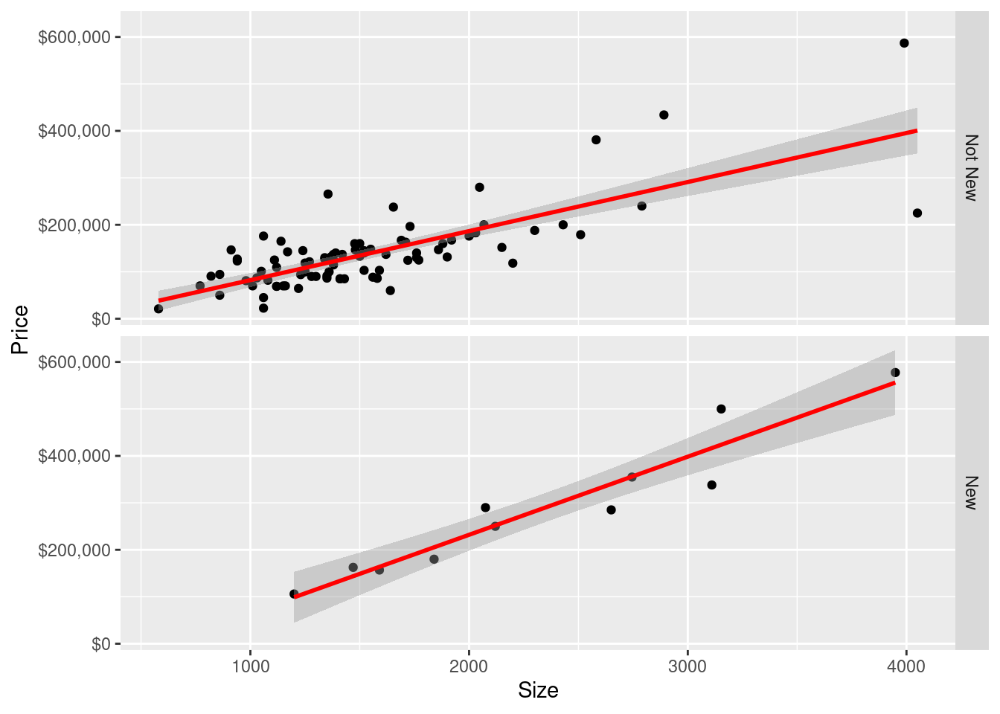

Code
library(alr4)Loading required package: carLoading required package: carDataLoading required package: effectslattice theme set by effectsTheme()
See ?effectsTheme for details.Code
library(smss)Steve O’Neill
November 16, 2022
Loading required package: carLoading required package: carDataLoading required package: effectslattice theme set by effectsTheme()
See ?effectsTheme for details.For recent data in Jacksonville, Florida, on y = selling price of home (in dollars), x1 = size of home (in square feet), and x2 = lot size (in square feet), the prediction equation is ŷ = −10,536 + 53.8x1 + 2.84x2
A. A particular home of 1240 square feet on a lot of 18,000 square feet sold for $145,000. Find the predicted selling price and the residual, and interpret.
[1] 107296[1] 37704The predicted selling price of the home is $107,296. The residual is $37704, which means the model under-predicted.
B. Holding home size fixed, each one-square-foot increase in lot size brings a 2.84 increase in dollar value.
C. Holding lot size fixed, each sq. ft. increase in home size results in a $53.8 increase in home price.
(Data file: salary in alr4 R package). The data file concerns salary and other characteristics of all faculty in a small Midwestern college collected in the early 1980s for presentation in legal proceedings for which discrimination against women in salary was at issue. All persons in the data hold tenured or tenure track positions; temporary faculty are not included. The variables include degree, a factor with levels PhD and MS; rank, a factor with levels Asst, Assoc, and Prof; sex, a factor with levels Male and Female; Year, years in current rank; ysdeg, years since highest degree, and salary, academic year salary in dollars.
degree rank sex year ysdeg salary
1 Masters Prof Male 25 35 36350
2 Masters Prof Male 13 22 35350
3 Masters Prof Male 10 23 28200
4 Masters Prof Female 7 27 26775
5 PhD Prof Male 19 30 33696
6 Masters Prof Male 16 21 28516
7 PhD Prof Female 0 32 24900
8 Masters Prof Male 16 18 31909
9 PhD Prof Male 13 30 31850
10 PhD Prof Male 13 31 32850
11 Masters Prof Male 12 22 27025
12 Masters Assoc Male 15 19 24750
13 Masters Prof Male 9 17 28200
14 PhD Assoc Male 9 27 23712
15 Masters Prof Male 9 24 25748
16 Masters Prof Male 7 15 29342
17 Masters Prof Male 13 20 31114
18 PhD Assoc Male 11 14 24742
19 PhD Assoc Male 10 15 22906
20 PhD Prof Male 6 21 24450
21 PhD Asst Male 16 23 19175
22 PhD Assoc Male 8 31 20525
23 Masters Prof Male 7 13 27959
24 Masters Prof Female 8 24 38045
25 Masters Assoc Male 9 12 24832
26 Masters Prof Male 5 18 25400
27 Masters Assoc Male 11 14 24800
28 Masters Prof Female 5 16 25500
29 PhD Assoc Male 3 7 26182
30 PhD Assoc Male 3 17 23725
31 PhD Asst Female 10 15 21600
32 PhD Assoc Male 11 31 23300
33 PhD Asst Male 9 14 23713
34 PhD Assoc Female 4 33 20690
35 PhD Assoc Female 6 29 22450
36 Masters Assoc Male 1 9 20850
37 Masters Asst Female 8 14 18304
38 Masters Asst Male 4 4 17095
39 Masters Asst Male 4 5 16700
40 Masters Asst Male 4 4 17600
41 Masters Asst Male 3 4 18075
42 PhD Asst Male 3 11 18000
43 Masters Assoc Male 0 7 20999
44 Masters Asst Female 3 3 17250
45 Masters Asst Male 2 3 16500
46 Masters Asst Male 2 1 16094
47 Masters Asst Female 2 6 16150
48 Masters Asst Female 2 2 15350
49 Masters Asst Male 1 1 16244
50 Masters Asst Female 1 1 16686
51 Masters Asst Female 1 1 15000
52 Masters Asst Female 0 2 20300Test the hypothesis that the mean salary for men and women is the same, without regard to any other variable but sex. Explain your findings.
Call:
lm(formula = salary$salary ~ salary$sex)
Residuals:
Min 1Q Median 3Q Max
-8602.8 -4296.6 -100.8 3513.1 16687.9
Coefficients:
Estimate Std. Error t value Pr(>|t|)
(Intercept) 24697 938 26.330 <2e-16 ***
salary$sexFemale -3340 1808 -1.847 0.0706 .
---
Signif. codes: 0 '***' 0.001 '**' 0.01 '*' 0.05 '.' 0.1 ' ' 1
Residual standard error: 5782 on 50 degrees of freedom
Multiple R-squared: 0.0639, Adjusted R-squared: 0.04518
F-statistic: 3.413 on 1 and 50 DF, p-value: 0.0706The hypothesis that mean salary for men and women is the same without regard to any other variable but sex is confirmed. Normally, I would expect this to be phrased as the null hypothesis. But to answer the specific wording of this question, the hypothesis (of ‘sameness’) is confirmed and the null hypothesis (of difference) is rejected.
Run a multiple linear regression with salary as the outcome variable and everything else as predictors, including sex. Assuming no interactions between sex and the other predictors, obtain a 95% confidence interval for the difference in salary between males and females.
Call:
lm(formula = salary ~ ., data = salary)
Residuals:
Min 1Q Median 3Q Max
-4045.2 -1094.7 -361.5 813.2 9193.1
Coefficients:
Estimate Std. Error t value Pr(>|t|)
(Intercept) 15746.05 800.18 19.678 < 2e-16 ***
degreePhD 1388.61 1018.75 1.363 0.180
rankAssoc 5292.36 1145.40 4.621 3.22e-05 ***
rankProf 11118.76 1351.77 8.225 1.62e-10 ***
sexFemale 1166.37 925.57 1.260 0.214
year 476.31 94.91 5.018 8.65e-06 ***
ysdeg -124.57 77.49 -1.608 0.115
---
Signif. codes: 0 '***' 0.001 '**' 0.01 '*' 0.05 '.' 0.1 ' ' 1
Residual standard error: 2398 on 45 degrees of freedom
Multiple R-squared: 0.855, Adjusted R-squared: 0.8357
F-statistic: 44.24 on 6 and 45 DF, p-value: < 2.2e-16[1] 3030.564[1] -697.8237The confidence interval is (-697.8237, 3030.564)
Here are the findings from earlier:
Interpret your finding for each predictor variable; discuss (a) statistical significance, (b) interpretation of the coefficient / slope in relation to the outcome variable and other variables
The standout variables are rank and year. Being a full professor has double the effect on salary as an associate, and the p-value is also much smaller. Year has a smaller yet significant effect. Asst is missing because it is the baseline category.
Years since highest degree earned is not statistically significant, nor seems to be sex (in this dataset, with these observations).
Change the baseline category for the rank variable. Interpret the coefficients related to rank again.
Call:
lm(formula = salary ~ ., data = salary)
Residuals:
Min 1Q Median 3Q Max
-4045.2 -1094.7 -361.5 813.2 9193.1
Coefficients:
Estimate Std. Error t value Pr(>|t|)
(Intercept) 21038.41 1109.12 18.969 < 2e-16 ***
degreePhD 1388.61 1018.75 1.363 0.180
rankAsst -5292.36 1145.40 -4.621 3.22e-05 ***
rankProf 5826.40 1012.93 5.752 7.28e-07 ***
sexFemale 1166.37 925.57 1.260 0.214
year 476.31 94.91 5.018 8.65e-06 ***
ysdeg -124.57 77.49 -1.608 0.115
---
Signif. codes: 0 '***' 0.001 '**' 0.01 '*' 0.05 '.' 0.1 ' ' 1
Residual standard error: 2398 on 45 degrees of freedom
Multiple R-squared: 0.855, Adjusted R-squared: 0.8357
F-statistic: 44.24 on 6 and 45 DF, p-value: < 2.2e-16With rankAssoc excluded and rankAsst included, now we also see that being an assistant professor is negatively correlated with salary - this makes sense considering basic intuition.
Finkelstein (1980), in a discussion of the use of regression in discrimination cases, wrote, “[a] variable may reflect a position or status bestowed by the employer, in which case if there is discrimination in the award of the position or status, the variable may be ‘tainted.’” Thus, for example, if discrimination is at work in promotion of faculty to higher ranks, using rank to adjust salaries before comparing the sexes may not be acceptable to the courts.
Exclude the variable rank, refit, and summarize how your findings changed, if they did.
Call:
lm(formula = salary ~ . - rank, data = salary)
Residuals:
Min 1Q Median 3Q Max
-8146.9 -2186.9 -491.5 2279.1 11186.6
Coefficients:
Estimate Std. Error t value Pr(>|t|)
(Intercept) 17183.57 1147.94 14.969 < 2e-16 ***
degreePhD -3299.35 1302.52 -2.533 0.014704 *
sexFemale -1286.54 1313.09 -0.980 0.332209
year 351.97 142.48 2.470 0.017185 *
ysdeg 339.40 80.62 4.210 0.000114 ***
---
Signif. codes: 0 '***' 0.001 '**' 0.01 '*' 0.05 '.' 0.1 ' ' 1
Residual standard error: 3744 on 47 degrees of freedom
Multiple R-squared: 0.6312, Adjusted R-squared: 0.5998
F-statistic: 20.11 on 4 and 47 DF, p-value: 1.048e-09With rank removed entirely, years since highest degree earned becomes the most significant variable, with PhD and years of service also being significant.
Everyone in this dataset was hired the year they earned their highest degree. It is also known that a new Dean was appointed 15 years ago, and everyone in the dataset who earned their highest degree 15 years ago or less than that has been hired by the new Dean. Some people have argued that the new Dean has been making offers that are a lot more generous to newly hired faculty than the previous one and that this might explain some of the variation in Salary.
Create a new variable that would allow you to test this hypothesis and run another multiple regression model to test this. Select variables carefully to make sure there is no multicollinearity. Explain why multicollinearity would be a concern in this case and how you avoided it. Do you find support for the hypothesis that the people hired by the new Dean are making higher than those that were not?
dean_old year
1 1 25
2 0 13
3 0 10
4 0 7
5 1 19
6 1 16
7 0 0
8 1 16
9 0 13
10 0 13For the new linear model, I am excluding years of service and only including years since highest degree attained. Since dean_old is derived from year, this avoids multicolinearity:
Call:
lm(formula = salary ~ . - year, data = salary)
Residuals:
Min 1Q Median 3Q Max
-5076.5 -1468.1 -569.6 1382.1 9444.4
Coefficients:
Estimate Std. Error t value Pr(>|t|)
(Intercept) 21735.66 1362.56 15.952 < 2e-16 ***
degreePhD 436.19 1217.06 0.358 0.72172
rankAsst -4265.73 1372.22 -3.109 0.00325 **
rankProf 6153.34 1225.02 5.023 8.52e-06 ***
sexFemale -661.30 1013.29 -0.653 0.51732
ysdeg 57.20 80.92 0.707 0.48324
dean_old 2401.72 1415.86 1.696 0.09674 .
---
Signif. codes: 0 '***' 0.001 '**' 0.01 '*' 0.05 '.' 0.1 ' ' 1
Residual standard error: 2904 on 45 degrees of freedom
Multiple R-squared: 0.7875, Adjusted R-squared: 0.7592
F-statistic: 27.79 on 6 and 45 DF, p-value: 1.34e-13After including the new “dean” variable and removing year, I don’t find a significant difference in the salaries of professors hiring the two new deans - in other words, the null hypothesis fails to be rejected. It would be significant at a 90% confidence level, but we went in with a 5% significance level
It could be argued that year, representing years of service to the university, is colinear with ysdeg, years since highest degree earned. Both of them are a function of time and represent the career-stage of a professor. However, I think professors often come in from different universities so they are not necessarily correlated. I could really see it both ways. If that variable is also removed, the dean_old variable becomes significant at the 5% confidence level.
case Taxes Beds Baths New Price Size
1 1 3104 4 2 0 279900 2048
2 2 1173 2 1 0 146500 912
3 3 3076 4 2 0 237700 1654
4 4 1608 3 2 0 200000 2068
5 5 1454 3 3 0 159900 1477
6 6 2997 3 2 1 499900 3153
7 7 4054 3 2 0 265500 1355
8 8 3002 3 2 1 289900 2075
9 9 6627 5 4 0 587000 3990
10 10 320 3 2 0 70000 1160
11 11 630 3 2 0 64500 1220
12 12 1780 3 2 0 167000 1690
13 13 1630 3 2 0 114600 1380
14 14 1530 3 2 0 103000 1590
15 15 930 3 1 0 101000 1050
16 16 590 2 1 0 70000 770
17 17 1050 3 2 0 85000 1410
18 18 20 3 1 0 22500 1060
19 19 870 2 2 0 90000 1300
20 20 1320 3 2 0 133000 1500
21 21 1350 2 1 0 90500 820
22 22 5616 4 3 1 577500 3949
23 23 680 2 1 0 142500 1170
24 24 1840 3 2 0 160000 1500
25 25 3680 4 2 0 240000 2790
26 26 1660 3 1 0 87000 1030
27 27 1620 3 2 0 118600 1250
28 28 3100 3 2 0 140000 1760
29 29 2070 2 3 0 148000 1550
30 30 830 3 2 0 69000 1120
31 31 2260 4 2 0 176000 2000
32 32 1760 3 1 0 86500 1350
33 33 2750 3 2 1 180000 1840
34 34 2020 4 2 0 179000 2510
35 35 4900 3 3 1 338000 3110
36 36 1180 4 2 0 130000 1760
37 37 2150 3 2 0 163000 1710
38 38 1600 2 1 0 125000 1110
39 39 1970 3 2 0 100000 1360
40 40 2060 3 1 0 100000 1250
41 41 1980 3 1 0 100000 1250
42 42 1510 3 2 0 146500 1480
43 43 1710 3 2 0 144900 1520
44 44 1590 3 2 0 183000 2020
45 45 1230 3 2 0 69900 1010
46 46 1510 2 2 0 60000 1640
47 47 1450 2 2 0 127000 940
48 48 970 3 2 0 86000 1580
49 49 150 2 2 0 50000 860
50 50 1470 3 2 0 137000 1420
51 51 1850 3 2 0 121300 1270
52 52 820 2 1 0 81000 980
53 53 2050 4 2 0 188000 2300
54 54 710 3 2 0 85000 1430
55 55 1280 3 2 0 137000 1380
56 56 1360 3 2 0 145000 1240
57 57 830 3 2 0 69000 1120
58 58 800 3 2 0 109300 1120
59 59 1220 3 2 0 131500 1900
60 60 3360 4 3 0 200000 2430
61 61 210 3 2 0 81900 1080
62 62 380 2 1 0 91200 1350
63 63 1920 4 3 0 124500 1720
64 64 4350 3 3 0 225000 4050
65 65 1510 3 2 0 136500 1500
66 66 4154 3 3 0 381000 2581
67 67 1976 3 2 1 250000 2120
68 68 3605 3 3 1 354900 2745
69 69 1400 3 2 0 140000 1520
70 70 790 2 2 0 89900 1280
71 71 1210 3 2 0 137000 1620
72 72 1550 3 2 0 103000 1520
73 73 2800 3 2 0 183000 2030
74 74 2560 3 2 0 140000 1390
75 75 1390 4 2 0 160000 1880
76 76 5443 3 2 0 434000 2891
77 77 2850 2 1 0 130000 1340
78 78 2230 2 2 0 123000 940
79 79 20 2 1 0 21000 580
80 80 1510 4 2 0 85000 1410
81 81 710 3 2 0 69900 1150
82 82 1540 3 2 0 125000 1380
83 83 1780 3 2 1 162600 1470
84 84 2920 2 2 1 156900 1590
85 85 1710 3 2 1 105900 1200
86 86 1880 3 2 0 167500 1920
87 87 1680 3 2 0 151800 2150
88 88 3690 5 3 0 118300 2200
89 89 900 2 2 0 94300 860
90 90 560 3 1 0 93900 1230
91 91 2040 4 2 0 165000 1140
92 92 4390 4 3 1 285000 2650
93 93 690 3 1 0 45000 1060
94 94 2100 3 2 0 124900 1770
95 95 2880 4 2 0 147000 1860
96 96 990 2 2 0 176000 1060
97 97 3030 3 2 0 196500 1730
98 98 1580 3 2 0 132200 1370
99 99 1770 3 2 0 88400 1560
100 100 1430 3 2 0 127200 1340
Call:
lm(formula = Price ~ Size + New, data = house.selling.price)
Residuals:
Min 1Q Median 3Q Max
-205102 -34374 -5778 18929 163866
Coefficients:
Estimate Std. Error t value Pr(>|t|)
(Intercept) -40230.867 14696.140 -2.738 0.00737 **
Size 116.132 8.795 13.204 < 2e-16 ***
New 57736.283 18653.041 3.095 0.00257 **
---
Signif. codes: 0 '***' 0.001 '**' 0.01 '*' 0.05 '.' 0.1 ' ' 1
Residual standard error: 53880 on 97 degrees of freedom
Multiple R-squared: 0.7226, Adjusted R-squared: 0.7169
F-statistic: 126.3 on 2 and 97 DF, p-value: < 2.2e-16Both size and new are statistically significant variables. The size variable has a much lower p-value, meeting 0.1 % significance level.
An increase in one sq. ft. of size may increase a house’s value by $116.13 if new is held constant. A house being new can affect the price by $57,736.28 with size being held constant.
The prediction equation would be:
Predicted Price = 116.132(Size) + 57736.283(New) -40230.867
Call:
lm(formula = Price ~ New, data = house.selling.price)
Residuals:
Min 1Q Median 3Q Max
-185064 -49042 -9967 22183 448433
Coefficients:
Estimate Std. Error t value Pr(>|t|)
(Intercept) 138567 9504 14.580 < 2e-16 ***
New 152396 28655 5.318 6.61e-07 ***
---
Signif. codes: 0 '***' 0.001 '**' 0.01 '*' 0.05 '.' 0.1 ' ' 1
Residual standard error: 89660 on 98 degrees of freedom
Multiple R-squared: 0.224, Adjusted R-squared: 0.2161
F-statistic: 28.28 on 1 and 98 DF, p-value: 6.608e-07Report and interpret the prediction equation, and form separate equations relating selling price to size for new and for not new homes.
Equations for just size and just newness, respectively, are:
Predicted Price = 126.594(Size) -50926.255
Predicted Price = 152396(New) + 138567
Find the predicted selling price for a home of 3000 square feet that is (i) new, (ii) not new.
[1] 365901.4[1] 308165.1The predicted selling price of a new vs not new home of 3000 sq/ft is $365901.4 and $308165.1, respectively.
Fit another model, this time with an interaction term allowing interaction between size and new, and report the regression results
Call:
lm(formula = Price ~ Size + New + Size * New, data = house.selling.price)
Residuals:
Min 1Q Median 3Q Max
-175748 -28979 -6260 14693 192519
Coefficients:
Estimate Std. Error t value Pr(>|t|)
(Intercept) -22227.808 15521.110 -1.432 0.15536
Size 104.438 9.424 11.082 < 2e-16 ***
New -78527.502 51007.642 -1.540 0.12697
Size:New 61.916 21.686 2.855 0.00527 **
---
Signif. codes: 0 '***' 0.001 '**' 0.01 '*' 0.05 '.' 0.1 ' ' 1
Residual standard error: 52000 on 96 degrees of freedom
Multiple R-squared: 0.7443, Adjusted R-squared: 0.7363
F-statistic: 93.15 on 3 and 96 DF, p-value: < 2.2e-16Report the lines relating the predicted selling price to the size for homes that are (i) new, (ii) not new.
library(ggplot2)
new_labels <- c(
`0` = "Not New",
`1` = "New"
)
ggplot(house.selling.price, aes(x = Size, y = Price)) +
geom_point() +
stat_smooth(method = "lm", col = "red") +
facet_grid(house.selling.price$New, labeller = as_labeller(new_labels)) +
scale_y_continuous(labels=scales::dollar_format())`geom_smooth()` using formula = 'y ~ x'
Here is a faceted plot representation of New, re: Size and Price.
Find the predicted selling price for a home of 3000 square feet that is (i) new, (ii) not new.
[1] 291086.2[1] 398306.7The predicted selling price for homes of 3000 sq/ft are, taking into account condition:
Not new: $291086.2 New: $398306.7
Find the predicted selling price for a home of 1500 square feet that is (i) new, (ii) not new. Comparing to (F), explain how the difference in predicted selling prices changes as the size of home increases.
[1] 134429.2[1] 148775.7Here, the costs are $134429.2 and $148775.7, respectively. This is a much smaller difference. It means that as the size of houses increase, newness increases the price of the house more, per dollar.
Do you think the model with interaction or the one without it represents the relationship of size and new to the outcome price? What makes you prefer one model over another?
The model with interaction variables has a higher R-squared, and to me it makes sense that the cost of newness is seen in larger houses. Therefore I think the second model is the better one.
---
title: "Homework 4"
author: "Steve O'Neill"
description: "Homework 4"
date: "11/16/2022"
df-paged: true
format:
html:
toc: true
code-fold: true
code-copy: true
code-tools: true
categories:
- hw4
---
```{r}
library(alr4)
library(smss)
```
## Question 1
*For recent data in Jacksonville, Florida, on y = selling price of home (in dollars), x1 = size of home (in square feet), and x2 = lot size (in square feet), the prediction equation is ŷ = −10,536 + 53.8x1 + 2.84x2*
*A. A particular home of 1240 square feet on a lot of 18,000 square feet sold for \$145,000. Find the predicted selling price and the residual, and interpret.*
```{r}
home_size <- 1240
lot_size <- 18000
y = -10536 + (53.8 * home_size) + (2.84 * lot_size)
y
145000 - y
```
The predicted selling price of the home is \$107,296. The residual is \$37704, which means the model under-predicted.
B. Holding home size fixed, each one-square-foot increase in lot size brings a 2.84 increase in dollar value.
C. Holding lot size fixed, each sq. ft. increase in home size results in a \$53.8 increase in home price.
## Question 2
*(Data file: salary in alr4 R package). The data file concerns salary and other characteristics of all faculty in a small Midwestern college collected in the early 1980s for presentation in legal proceedings for which discrimination against women in salary was at issue. All persons in the data hold tenured or tenure track positions; temporary faculty are not included. The variables include degree, a factor with levels PhD and MS; rank, a factor with levels Asst, Assoc, and Prof; sex, a factor with levels Male and Female; Year, years in current rank; ysdeg, years since highest degree, and salary, academic year salary in dollars.*
```{r}
data(salary)
salary
```
Test the hypothesis that the mean salary for men and women is the same, without regard to any other variable but sex. Explain your findings.
```{r}
summary(lm(salary$salary ~ salary$sex))
```
The hypothesis that mean salary for men and women is *the same* without regard to any other variable but sex is confirmed. Normally, I would expect this to be phrased as the null hypothesis. But to answer the specific wording of this question, the hypothesis (of 'sameness') is confirmed and the null hypothesis (of difference) is rejected.
*Run a multiple linear regression with salary as the outcome variable and everything else as predictors, including sex. Assuming no interactions between sex and the other predictors, obtain a 95% confidence interval for the difference in salary between males and females.*
```{r}
summary(lm(salary ~ ., data = salary))
moe = qt(.975, df=45) * 925.57 #aka standard error
upper<- 1166.37 + moe #1166.37 is the coefficient of sexFemale
lower<- 1166.37 - moe
upper
lower
```
The confidence interval is (-697.8237, 3030.564)
Here are the findings from earlier:
*Interpret your finding for each predictor variable; discuss (a) statistical significance, (b) interpretation of the coefficient / slope in relation to the outcome variable and other variables*
The standout variables are `rank` and `year`. Being a full professor has double the effect on salary as an associate, and the p-value is also much smaller. Year has a smaller yet significant effect. `Asst` is missing because it is the baseline category.
Years since highest degree earned is not statistically significant, nor seems to be sex (in this dataset, with these observations).
*Change the baseline category for the rank variable. Interpret the coefficients related to rank again.*
```{r}
salary$rank <- relevel(salary$rank, ref = "Assoc")
summary(lm(salary ~ ., data = salary))
```
With `rankAssoc` excluded and `rankAsst` included, now we also see that being an assistant professor is negatively correlated with salary - this makes sense considering basic intuition.
*Finkelstein (1980), in a discussion of the use of regression in discrimination cases, wrote, "\[a\] variable may reflect a position or status bestowed by the employer, in which case if there is discrimination in the award of the position or status, the variable may be 'tainted.'" Thus, for example, if discrimination is at work in promotion of faculty to higher ranks, using rank to adjust salaries before comparing the sexes may not be acceptable to the courts.*
*Exclude the variable rank, refit, and summarize how your findings changed, if they did.*
```{r}
summary(lm(salary ~ . - rank, data = salary))
```
With rank removed entirely, years since highest degree earned becomes the most significant variable, with PhD and years of service also being significant.
*Everyone in this dataset was hired the year they earned their highest degree. It is also known that a new Dean was appointed 15 years ago, and everyone in the dataset who earned their highest degree 15 years ago or less than that has been hired by the new Dean. Some people have argued that the new Dean has been making offers that are a lot more generous to newly hired faculty than the previous one and that this might explain some of the variation in Salary.*
*Create a new variable that would allow you to test this hypothesis and run another multiple regression model to test this. Select variables carefully to make sure there is no multicollinearity. Explain why multicollinearity would be a concern in this case and how you avoided it. Do you find support for the hypothesis that the people hired by the new Dean are making higher than those that were not?*
```{r}
salary$dean_old <- ifelse(salary$year >=15, 1, 0)
head(salary[c('dean_old', 'year')], n = 10)
```
For the new linear model, I am excluding years of service and only including years since highest degree attained. Since `dean_old` is derived from `year`, this avoids multicolinearity:
```{r}
summary(lm(salary ~ . -year, data = salary))
```
After including the new "dean" variable and removing year, I don't find a significant difference in the salaries of professors hiring the two new deans - in other words, the null hypothesis fails to be rejected. It would be significant at a 90% confidence level, but we went in with a 5% significance level
It could be argued that `year`, representing years of service to the university, is colinear with `ysdeg`, years since highest degree earned. Both of them are a function of time and represent the career-stage of a professor. However, I think professors often come in from different universities so they are not necessarily correlated. I could really see it both ways. If that variable is also removed, the `dean_old` variable becomes significant at the 5% confidence level.
```{r}
library(smss)
data("house.selling.price")
house.selling.price
```
```{r}
summary(lm(Price ~ Size + New, data = house.selling.price))
```
Both `size` and `new` are statistically significant variables. The `size` variable has a much lower p-value, meeting 0.1 % significance level.
An increase in one sq. ft. of size may increase a house's value by \$116.13 if `new` is held constant. A house being new can affect the price by \$57,736.28 with `size` being held constant.
The prediction equation would be:
Predicted Price = 116.132(Size) + 57736.283(New) -40230.867
```{r}
summary(lm(Price ~ New, data = house.selling.price))
```
*Report and interpret the prediction equation, and form separate equations relating selling price to size for new and for not new homes.*
Equations for just size and just newness, respectively, are:
Predicted Price = 126.594(Size) -50926.255
Predicted Price = 152396(New) + 138567
*Find the predicted selling price for a home of 3000 square feet that is (i) new, (ii) not new.*
```{r}
new <- 1
notnew <- 0
size <- 3000
(116.132 * size) + (57736.283 * new) -40230.867
(116.132 * size) + (57736.283 * notnew) -40230.867
```
The predicted selling price of a new vs not new home of 3000 sq/ft is \$365901.4 and \$308165.1, respectively.
*Fit another model, this time with an interaction term allowing interaction between size and new, and report the regression results*
```{r}
fit <- summary(lm(Price ~ Size + New + Size * New, data = house.selling.price))
fit
```
*Report the lines relating the predicted selling price to the size for homes that are (i) new, (ii) not new.*
```{r}
library(ggplot2)
new_labels <- c(
`0` = "Not New",
`1` = "New"
)
ggplot(house.selling.price, aes(x = Size, y = Price)) +
geom_point() +
stat_smooth(method = "lm", col = "red") +
facet_grid(house.selling.price$New, labeller = as_labeller(new_labels)) +
scale_y_continuous(labels=scales::dollar_format())
```
Here is a faceted plot representation of `New`, re: Size and Price.
*Find the predicted selling price for a home of 3000 square feet that is (i) new, (ii) not new.*
```{r}
size <- 3000
size_coef <- 104.438
new_coef <- -78527.502
sizenew_coef <- 61.916
(size_coef * size) + (new_coef * 0) + (sizenew_coef * 0 * 3000) - 22227.808
(size_coef * size) + (new_coef * 1) + (sizenew_coef * 1 * 3000) - 22227.808
```
The predicted selling price for homes of 3000 sq/ft are, taking into account condition:
Not new: \$291086.2 New: \$398306.7
*Find the predicted selling price for a home of 1500 square feet that is (i) new, (ii) not new. Comparing to (F), explain how the difference in predicted selling prices changes as the size of home increases.*
```{r}
size <- 1500
size_coef <- 104.438
new_coef <- -78527.502
sizenew_coef <- 61.916
(size_coef * size) + (new_coef * 0) + (sizenew_coef * 0 * size) - 22227.808
(size_coef * size) + (new_coef * 1) + (sizenew_coef * 1 * size) - 22227.808
```
Here, the costs are \$134429.2 and \$148775.7, respectively. This is a much smaller difference. It means that as the size of houses increase, newness increases the price of the house more, per dollar.
*Do you think the model with interaction or the one without it represents the relationship of size and new to the outcome price? What makes you prefer one model over another?*
The model with interaction variables has a higher R-squared, and to me it makes sense that the cost of newness is seen in larger houses. Therefore I think the second model is the better one.